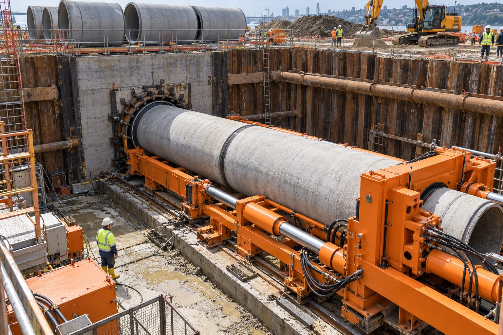

Yük altında dayanım
Çelik kılıf, üstteki yol ve ray yüküne karşı hattı korur.
Hizmetlerimiz · 04

Boru Sürme ve İtme
Açık kazının uygun olmadığı alanlarda boru hatlarının kontrollü sürülmesi ve itilmesiyle altyapı geçişi.
Boru sürme (pipe jacking) ve itme yöntemlerinde boru, giriş çukurundan hidrolik güçle zemine itilir; zemin boru içinden helezon veya kazıcı başlıkla alınır. Yüzeyde açılma olmadan, yük altındaki kesitlerde güvenli geçiş sağlar.
Özellikle karayolu, demiryolu ve sanayi sahalarında, hassas kot ve doğrultu gerektiren geçişlerde tercih edilir. Yiba, boru çapına ve geçiş uzunluğuna uygun sürme ünitesiyle uygulama yapar.
Neden Yiba?
Çelik kılıf, üstteki yol ve ray yüküne karşı hattı korur.
Hidrolik itme ile hassas, düz geçiş.
Trafik ve yüzey kullanımı etkilenmez.
Boru çapı ve mesafeye uygun sürme ekipmanı.
Sık sorulan sorular
Küçük çaplı koruma borularından büyük çaplı çelik kılıflara kadar uygulanabilir; kesin aralık keşifte belirlenir.
Düz, kısa ve hassas kot gerektiren, yük altındaki geçişlerde boru sürme; uzun ve eğrisel güzergâhlarda yönlendirilebilir sondaj öne çıkar.
Geçiş kotuna göre değişir; çukur iksa ile güvenli hale getirilir.